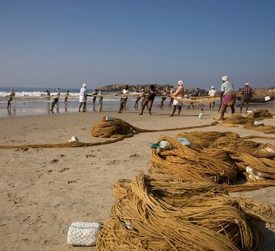
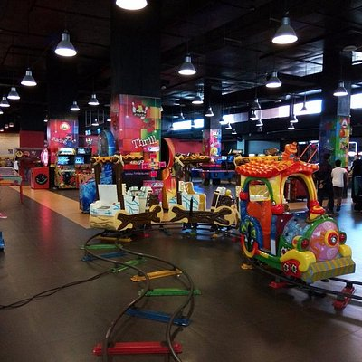
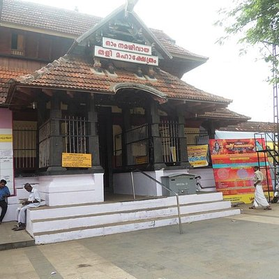
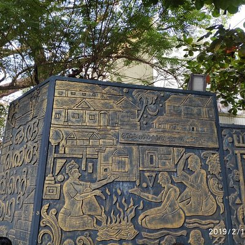
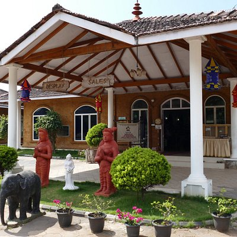
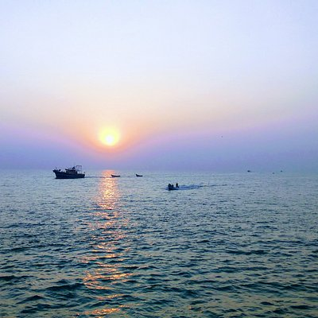
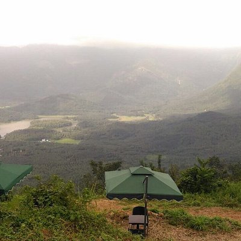
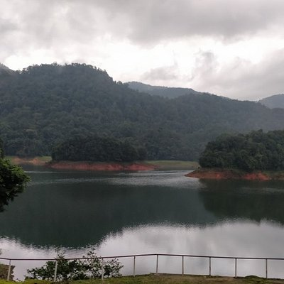
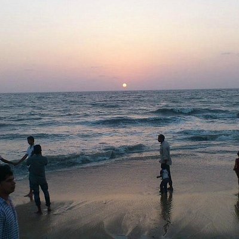
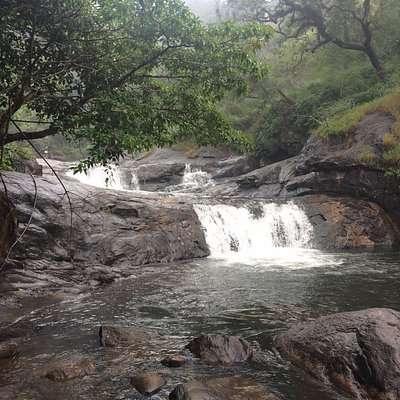

City of Spices
Kozhikode is a coastal city in the south Indian state of Kerala. It was a significant spice trade center and is close to Kappad Beach, where Portuguese explorer Vasco da Gama landed in 1498. The central Kozhikode Beach, overlooked by an old lighthouse, is a popular spot for watching the sunset.
Top Destinations

Kappad Beach
Kappad Beach has historically played an important role in the history of Kerala. On these shores, over 500 years ago in 1498, 170 men led by Vasco- da-Gama first stepped onto Kerala. The entire State, especially the Malabar Coast, would never be the same again.

Hilite Mall
HiLITE Mall is a shopping mall located in the city of Kozhikode in the Malabar region of Kerala. HiLITE Mall is located in Palazhi bypass junction on the National Highway 66 bypass where the bypass meets Pottammal - Palazhi road.

Tali Temple
ali Shiva Temple or Tali Mahakshetram is a Hindu temple dedicated to the deity Shiva, situated in the heart of the Kozhikode city, Kerala. The temple was built in the 14th Century by Zamorin of Calicut.

S.M. Street
S.M. Street, abbreviation for Sweetmeat Street, also known as Mittai Theruvu, is a shopping street located in Kozhikode, Kerala, India. The street is a pedestrian zone. It also has a 160 year old Fire temple amidst shopping places

Sargaalaya
Sargaalaya is a 20-acre arts and crafts village in Iringal, in Koyilandy, Kerala, India. It was established at a cost of around 15 crores on 19 February 2011 by The Kerala Tourism Department.

Beypore Beach
Beypore or Beypur is an ancient port town and a locality town in Kozhikode district in the state of Kerala, India. It is located opposite to Chaliyam, the estuary where the river Chaliyar empties into Arabian Sea.

Vayalada
Vayalada is a small Village/hamlet in Kozhikode District of Kerala. Vayalada hills is known as Malabar's Gavi. It is situated at a height of about 567 meters above sea level and 38kms away from Kozhikode city. The main attraction on Vayalada is the view from its top.

Kakkayam Dam
Kakkayam is a dam site located at Koorachundu in Kozhikode, Kerala. Kakkayam is on the outskirts of the Western Ghats, a UNESCO world heritage site, and Malabar Wildlife Sanctuary, a 7,421-hectare abode of wild animals including elephants and bisons

Kozhikode Beach
Kozhikode Beach or Calicut Beach is a beach on the western side of Kozhikode, situated on the Malabar Coast of India. The beach is accessible through four road overbridges in the city. The beach has paved stones and illumination.

Kozhippara Falls
Panieli Poru is a tourist spot in the Ernakulam region of Kerala, India caused by a natural bottleneck in the flow of the Periyar River due to rock formations.